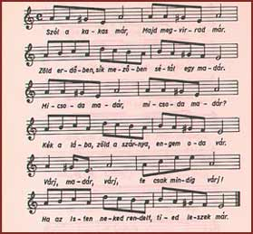

|  | |
|
According to a folk tale, Rabbi Jichak Eizik Taub once walked in the
fields and heard the music of a shepherd boy. He gave the boy a krajcár
(penny), then more and more, so he would play the song repeatedly.
He had already given him 101 pence when, the 102nd time, the flute went mute.
That is how the tzaddik took the song away from the shepherd boy. Later an
additional verse was added to the original text:
The rooster is already crowing, |
|
| The famous song is performed in Hungarian with some additional Hebrew lines by the Choir of the Budapest Tomkins Ensemble. | |